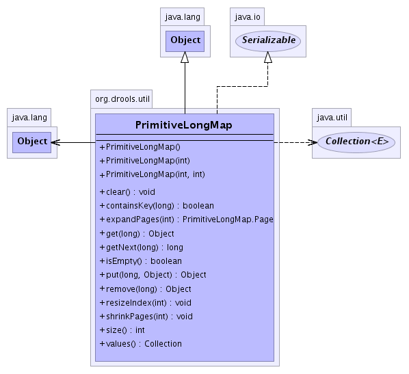

org.drools.util
Class PrimitiveLongMap
java.lang.Object
 org.drools.util.PrimitiveLongMap
org.drools.util.PrimitiveLongMap
- All Implemented Interfaces:
- java.io.Serializable
public class PrimitiveLongMap
- extends java.lang.Object
- implements java.io.Serializable
- See Also:
- Serialized Form
-
- 
|
Method Summary |
void |
clear()
|
boolean |
containsKey(long key)
|
org.drools.util.PrimitiveLongMap.Page |
expandPages(int toPageId)
Expand index to accomodate given pageId Create empty TopNodes |
java.lang.Object |
get(long key)
|
long |
getNext(long key)
gets the next populated key, after the given key position. |
boolean |
isEmpty()
|
java.lang.Object |
put(long key,
java.lang.Object value)
|
java.lang.Object |
remove(long key)
|
void |
resizeIndex(int newSize)
|
void |
shrinkPages(int toPageId)
Shrink index to accomodate given pageId |
int |
size()
|
java.util.Collection |
values()
|
| Methods inherited from class java.lang.Object |
clone, equals, finalize, getClass, hashCode, notify, notifyAll, toString, wait, wait, wait |
PrimitiveLongMap
public PrimitiveLongMap()
PrimitiveLongMap
public PrimitiveLongMap(int tableSize)
PrimitiveLongMap
public PrimitiveLongMap(int tableSize,
int indexIntervals)
clear
public void clear()
isEmpty
public boolean isEmpty()
put
public java.lang.Object put(long key,
java.lang.Object value)
remove
public java.lang.Object remove(long key)
get
public java.lang.Object get(long key)
getNext
public long getNext(long key)
- gets the next populated key, after the given key position.
- Parameters:
key -
- Returns:
size
public int size()
values
public java.util.Collection values()
containsKey
public boolean containsKey(long key)
expandPages
public org.drools.util.PrimitiveLongMap.Page expandPages(int toPageId)
- Expand index to accomodate given pageId Create empty TopNodes
shrinkPages
public void shrinkPages(int toPageId)
- Shrink index to accomodate given pageId
resizeIndex
public void resizeIndex(int newSize)